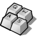

La traduzione di questa pagina non è stata completata. Per questo motivo le parti non tradotte sono visibili in inglese.
Keyboard
| Deskbar: | ||
| Localita: | /boot/system/preferences/Keyboard | |
| Impostazioni: | ~/config/settings/Keyboard_settings |

Set the repeat rate, and the delay until a held down key starts to repeat. You can test your settings in the text field at the bottom.
| riporta tutto ai valori predefiniti. | ||
| brings back the settings that were active when you started the Keyboard preferences. |